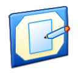
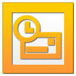

Microsoft
Windows
XP
Professional
Copyright © Microsoft Corporation
欢迎使用
请选择您的用户帐户开始使用
N
Novus77
个人网站

关于我
我的项目
简历

联系方式
音乐播放器
回收站
开始
🌐
🔊
N
Novus77
🖥️
关于我
📁
我的项目
🎵
音乐播放器
📄
简历
✉️
联系方式
📁
我的文档
🖼️
我的图片
🎵
我的音乐
⚙️
控制面板
正在关机，请稍候...